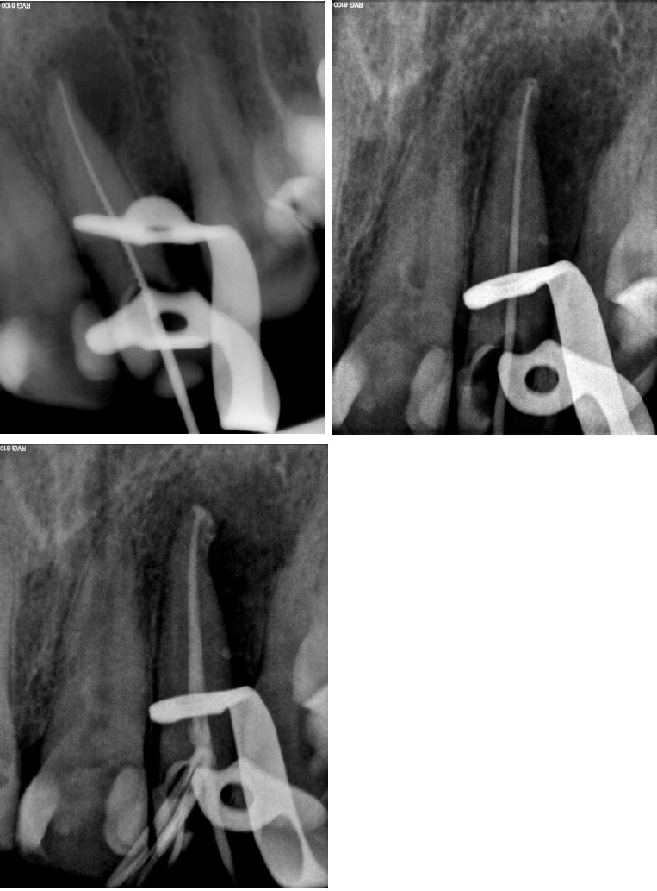
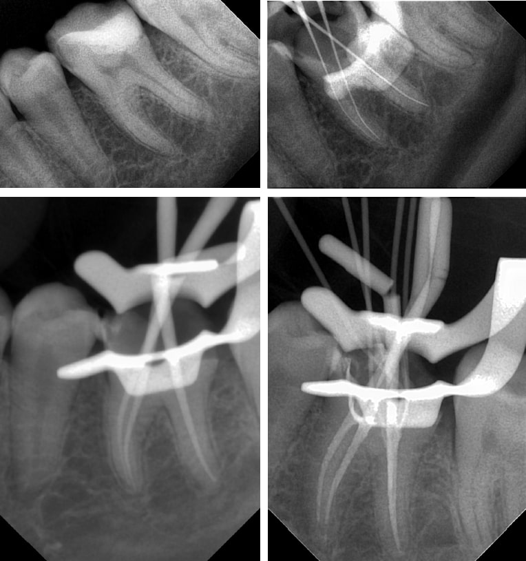
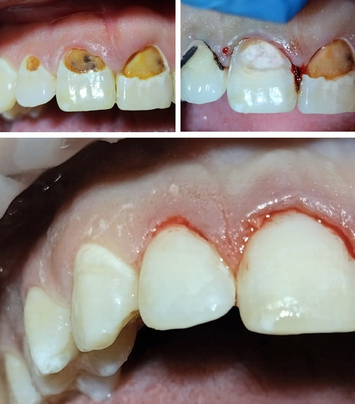

Портфолио стоматологических кейсов
Содержание
Кейс 1: Эндодонтия 22 зуб
Пациент: Мужчина, 35 лет.
Жалобы: Боль при накусывании на зуб 22, периодическое ощущение пульсации в области данного зуба.
Диагноз: K04.4 - Острый апикальный периодонтит.
Лечение:
- Проведено эндодонтическое лечение 22 зуба с использованием современных методов обработки корневых каналов.
- Выполнена механическая и медикаментозная обработка каналов после создания доступа.
- Каналы были запломбированы с применением латеральной конденсации гуттаперчи и эндодонтического герметика.
Результат: На контрольных рентгеновских снимках видно качественное запечатывание корневых каналов до верхушек корней. Пациент отметил полное исчезновение симптомов через неделю после лечения.
Рекомендации: Регулярное наблюдение у стоматолога каждые 6 месяцев.
Кейс 2: Эндодонтия 36 зуб
Пациент: Мужчина, 45 лет.
Жалобы: Острые болевые ощущения при жевании на область 36 зуба, пульсирующая боль, усиливающаяся ночью.
Диагноз: K04.02 - Острый гнойный пульпит.
Лечение:
- Проведена анестезия и обеспечен доступ к полости зуба и корневым каналам.
- Удаление воспаленной пульпы, механическая и медикаментозная обработка корневых каналов для устранения инфекции.
- Корневые каналы запломбированы методом латеральной конденсации гуттаперчи с использованием эндодонтического герметика.
Результат: Контрольные рентгеновские снимки показывают качественное пломбирование корневых каналов, восстановление анатомической формы зуба. Пациент сообщил о полном исчезновении боли на следующий день после лечения.
Рекомендации: Контрольное посещение через 6 месяцев для оценки состояния зуба и профилактики возможных осложнений.
Кейс 3: Эстетическая реставрация 11 и 12 зуб
Пациент: Мужчина, 40 лет.
Жалобы: Эстетический дефект передних зубов, кариозное поражение 11 и 12 зубов, дискомфорт при жевании и повышенная чувствительность зубов.
Диагноз: K02.1 - Кариес дентина.
Лечение:
- Проведена анестезия для обеспечения комфорта пациента.
- Удалены пораженные кариесом ткани зубов и проведена антисептическая обработка полостей.
- Восстановление анатомической формы зубов выполнено с использованием светокомпозитного материала, подобранного по цвету к естественным зубам.
- Проведена шлифовка и полировка реставраций для достижения гладкости и блеска, соответствующего естественной эмали.
Результат: Восстановление эстетики передних зубов, удовлетворяющее пациента по внешнему виду и функциональности. Пациент отметил улучшение эстетики и отсутствие дискомфорта после проведения реставрации.
Рекомендации: Избегать чрезмерного механического воздействия на реставрированные зубы, а также регулярные профилактические осмотры у стоматолога каждые 6 месяцев.
Контактная информация
Email: fizulina.pro@gmail.com
Телефон: +79171211064
Профессиональные ресурсы: Профиль
Отзывы пациентов: ProDoctorov